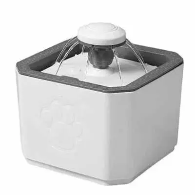

Fonte de Água Automática
Detalhes do Produto
- Marca
- FreshWater
- Material
- Plástico livre de BPA
- Indicação
- Cães e gatos de todos os tamanhos
- Capacidade
- 2 litros
- Características
-
- Água sempre fresca e oxigenada
- Filtro de carvão ativado incluso
- Motor silencioso
- Estimula hidratação do pet
- Fácil de limpar e montar
- Bivolt automático
- Consumo
- 2W
- Preço
- R$ 159,90
Descrição
Fonte de água automática que mantém a água sempre fresca, limpa e oxigenada. O sistema de circulação estimula os pets a beberem mais água, promovendo melhor hidratação. Inclui filtro de carvão ativado que remove impurezas e odores.